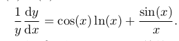
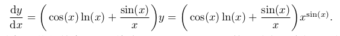

本文是微积分复习的第一篇，教材使用《普林斯顿微积分读本》，涵盖第1章-第14章的内容。
- 函数与微分 <=
- 积分
- 级数
- 其他
函数基础
定义
函数是将一个对象转化成另外一个对象的规则。起始的对象称为输入，来自称为定义域的集合。返回的对象称为输出，来自称为值域的集合。
一个函数必须给每一有效的输入制定唯一的输出。
定义域
定义据包括实数集尽可能多的部分，几种常见的情况：
- 分母不能为0
- 不能取一个负数的平方根
- 不能取一个负数或0的对数
反函数
数据中有很多对称，例如有了函数就有反函数。
给定一个实数 y, 那么在 f 定义域中的哪个x满足 f(x) = y ？
变换 f-1 就像是 f 的撤销按钮: 如果你从 x 出发,并通过函数 f 将它变换为 y, 那么你可以通过在 y 上的反函数 f-1 来撤销这个变换的效果,取回 x
图像关于y=x对称
奇偶性
偶函数：f(x) = f(-x)，图像关于y轴具有镜面对称性。
奇函数：f(x) = -f(-x)， 图像关于原点有对称性。
常见函数的图像
多项式 p(x) = anxn + an-1xn-1 + a1x1 + a0
一般多项式函数图像很难画，但其左右两段的走势倒是很容易判断。主要是由首项系数决定的。有理函数 p(x) / q(x)
指数函数图像
对数函数图像
其他
绝对值函数，正值不变，负值关于x周对称
开方函数，将多项式关于镜像对称
极限
x=a处的极限
从函数图像上，从左侧往右接近a时，就得到左极限; 反之从右往左接近是，就得到右极限。
当左极限等于右极限时，就称为双侧极限; 极限一般是指的双侧极限
f(x)在x = a处有一条垂直渐进线，则在a处的左极限和右极限，至少有一个是∞或−∞。
左右极限不存在的例子：f(x) = sin(1/x)，在x=0,不存在左右极限。
在∞与-∞处的极限
当x->∞ f(x)有固定值，则函数有水平渐进线。
函数与其渐进线可能会相交。
三明治定理

求解多项式的极限问题
- x-> a 有理函数,有理函数求解注意通分
- x-> a 平方根函数，注意乘共轭表达式
- x-> ∞ 有理函数，取决于首项及其系数
- x-> -∞ 时，若有函数需要开方时，注意取负数
导数
连续性, 直观上,连续函数的图像必须能一笔画成;
可导性, 直观上,在可导函数的图像中不会出现尖角。
连续性
定义
如果在x=a处的极限 = f(x), 则在x=a处连续。
这个定义中包括：在x=a处有双侧极限，并且在x=a处有定义，或者f(a)存在，他们相等。区间连续定义
f(x)在[a,b]区间上连续，在区间每一点都连续，且两个端点的单侧极限存在。介值定理
如果f(x) 在[a,b]上连续，并且f(a)f(b)<0，则在区间(a,b)上至少有一点c，使得f(c) = 0存在。最值定理
如果f(x) 在[a,b]上连续，则在[a,b]上至少有一个最大值和一个最小值。
可导性
定义
.
后来有dx表示x中十分微笑的彪悍，dy表示y中十分微笑的变化。dy就是微分。不存在导数的情况
双侧的导数不相同，直观上，就是有尖角。如果一个函数f在x上可导，则它在x上连续。
求导法则
乘法法则
两个变量相乘直观的展示是图中矩形的面积，长与宽都是x的函数，当x有一个小变化∆x,时，面积S如何变化。
∆S = ∆(uv) = v∆u + u∆v + (∆u)(∆v)。 其中(∆u)(∆v)是更高阶的无穷小，可以忽略。除法法则
链式法则
以 y=f(u) u=g(x) 为例：
∆y = f’(u)∆u
∆u = g’(x)∆x代入 ∆y = f’(u)g’(x)∆x
由此 ∆y/∆x = f’(u)g’(x)常见应用
几何：切线
物理：加速度
代数：导数伪装的极限
函数的导数
多项式函数
三角函数的极限与导数
极限
x可以换成其他函数代入与x2 、5x等
扇形面积= x/2，内三角形面积= sin(x)/2, 外三角形面积= tan(x)/2， 当x趋近0时，它们相等。
变换：1 > sin(x)/x > cos(x)，利用三明治定理，可以得到结论。
小波函数导数
sin’(x) = cos(x)
cos’(x) = -sin(x)tan’(x) = sec2(x)
cot’(x) = -csc2(x)sec’(x) = sec(x)tan(x)
csc’(x) = -csc(x)cot(x)记忆：正的导数都是正好，余的导数都是负数
一个有趣的函数
f(x) = x2sin(1/x)
根据求导公式，其在0处导数不存在
这样改之后，用导数定义，发现其在0处f’(0) = 0，但它同样不连续。小结
本节的sin(x)/x函数，是一个很漂亮的函数。貌似在小波中见过。
关于最后这个f(x) = x2sin(1/x)。导函数在0处存在，但却不连续。这种情况基本都出在sin(1/x)这种情况内，倒数使趋向无穷大变成了趋向无穷小。
指数函数与对数函数
对数基础
logb(1) = 0logb(xy) = logb(x) + logb(y)
log是可以将乘法变成加法的运算。logb(x/y) = logb(x) - logb(y)
logb(xy) = ylogb(x)
对数可以处理指数与对数都是函数的情况。logb(x) = logc(x) / logc(b)
这意味着，所有不同底数的对数，其实都互为常数倍。 logb(x) = Klogc(x) K=1/logc(b)e的定义
e一种由来，可以从计算复利而得来：当年利率一定，每年结算的的次数越多，最终的金额也就越多。当次数取向无穷时，其最终金额不会趋向无穷，而是一个常数。
导数
介绍e的定义，主要用于计算对数的导数。
根据反函数求导
极限
取对数求导法
y = xsin(x)
=> ln(y) = sin(x)ln(x)
=>
=> 
=> 指数增长与指数衰减
y变化率取决于这个量的大小。当k是正数就是指数增长，负数就是指数衰减。指数增长就是指的： P(t) = P0ekt
这时候, dP/dt = kP
常见例子是无限条件下，兔子的增长。指数衰减：P(t) = P0e-kt
dP/dt = -kP
常见例子是放射性原子的衰减。双曲函数
![双曲函数.png])(双曲函数.png)
双曲函数有些像三角函数：
- cosh2 - sinh2 = 1
- d(sinh(x))/dx = cosh(x) 及 d(cosh(x))/dx = sinh(x)
小结：
从对称性上，我们可以看到初等函数可以分成很多空间，多项式函数、三角函数、指对函数。他们在很多时候，都在自己空间内玩。比如求导运算，多项式求导之后还是多项式，三角函数求导也还是三角函数。但对数函数却打破了这种规律，它的求导变成了有理函数，这真有趣。另一个是e，从定义上，就可以看到e是多么神奇的一个数字。
隐函数导数
隐函数求导，比较适合于求等式的导数。
示例
x2 + y2 = 42x + 2y dy/dx = 0
dy/dx = -x/y
等式求导，一般关注于特定点，在特定点时，可以将等式求导之后，立即代入点，然后整理。对于二阶导，要等到求导2次之后再代入。
应用场景：求某个时刻的变化率问题，思路：
1、列出等式
2、等式求导
反函数导数
导数与反函数存在
在区间内单调则反函数存在，单调意味着: f’(x)>=0,或者f’(x)<=0,且等于0的点有限。公式
把反函数表示出来，然后再代入原函数的导数，并求其倒数示例
h(x) = x3
h’(x) = 3x2
反函数： y=x 1/3代入可得反函数的导数 1/(3x2/3)
导数与图像
函数的极值
假设函数 f 定义在开区间 (a, b) 内,并且点 c 在 (a, b) 区间内.如果点 c 为函数的局部最大值或最小值,那么点 c 一定为该函数的临界点.也就是说,f’(c) = 0 或 f’(c) 不存在闭区间[a,b]的最值，求f’(x) = 0的点，再加两个端点进行比较。
罗尔定理
假设函数 f 在闭区间[a, b]内连续,在开区间(a, b)内可导.如果 f(a) = f(b），那么在开区间 (a, b) 内至少存在一点 c, 使得 f‘(c) = 0.也就是一定有极值点。
中值定理
假设函数 f 在闭区间[a, b]内连续,在开区间(a, b)内可导,那么在开区间(a, b)内至少有一点 c 使得：
可以看出，罗尔定理是中值定理的特例。二阶导数
二级导数>0时，图像像是一个凹向上的，像是碗的一部分;二阶导书<0时，图像是凹向下的，像是倒着的碗。
拐点：在c点两侧，二阶导符号相异，则为拐点。
这个感激挺有趣，经常听房价拐点、经济拐点，感觉像是在说极值点。这里的拐点却不是。
拐点处f’’(c) = 0，但反过来并不成立，比如f(x) = x4
导数的应用
最优化涉及找出各种可能情况中最好的一种；
线性化是一种对难以计算的量找出其估算值的有用技术
最优化
- 找到变量
- 找出等式
- 消元
- 求最值，可能用到隐函数求导
书上给出3个实例，这里不多介绍了
线性化
线性化其实是用直线（一阶函数）来拟合原函数（曲线），以求解问题。
f(a+∆x) ≈ f(a) + f’(a)∆x.
微分： 其中量df = f’(a)∆x，称为f在 x=a 处的微分。
误差： r(x) = f(x) - L(x)
r(x) = f‘’(c)(x − a)2 , 其中 c 为在 x 和 a 之间的某个数
示例：
- 估算 (6.01)2
f’(x) = 2x
df = f’(a)∆x = f’(6)(0.01) = 12 × (0.01) = 0.12
(6.01)2 ≈ 36.12
估算零点的牛顿法
牛顿法求0值，是线性化的一个应用
假设现在要解一个形为 f (x) = 0 的方程,但你死活都解不出来.所以你退而求其次,试着猜测该方程有一个解,并把它记为 a.
失效的情况：
f‘(a) 的值接近于 0.

近似可能越来越糟
f (x) = x1/3，唯一解是 0 ，
代入公式：b = -2a，除非从0开始，否则越来越糟糕可能限于左右循环
洛必答法则
洛必答法则本身容易记住，重点是使用时的变形，要点是是对不定式使用
除法情况：
除法=乘法，只须将一种一个变成倒数即可
减法情况，需要将减法进行通分，变成除法
指数情况，需要进行取对数，将指数编程乘法
示例：